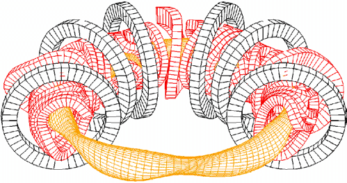

Stellarator Boundary Optimization
Built a gradient-free Augmented Lagrangian optimization workflow for constrained stellarator boundary shapes using Simsopt and VMEC. Ran large scan jobs on NYU Greene with reproducible Git-driven experiment tracking.
Python
Simsopt
VMEC
HPC